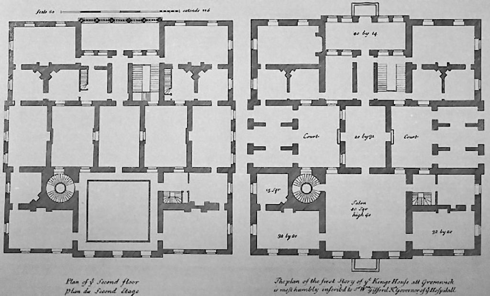
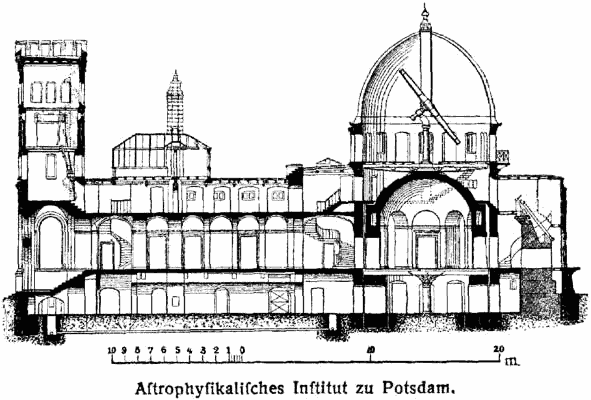

The size of drawings reflects the materials available and the size that is convenient to transport rolled up or folded, laid out on a table, or pinned up on a wall. The drafting process may impose limitations on the size that is realistically workable. Sizes are determined by a consistent paper size system, according to local usage.
Floor plan A floor plan is the most fundamental architectural diagram, a view from above showing the arrangement of spaces in a building in the same way as a map, but showing the arrangement at a particular level of a building.
PlasterArea =
Length
×
Width
Plaster Area =
100.00
m
2
Site plan A site plan is a specific type of plan, showing the whole context of a building or group of buildings. A site plan shows property boundaries and means of access to the site, and nearby structures if they are relevant to the design. For a development on an urban site, the site plan may need to show adjoining streets to demonstrate how the design fits into the urban fabric.
Elevation An elevation is a view of a building seen from one side, a flat representation of one façade. This is the most common view used to describe the external appearance of a building. Each elevation is labelled in relation to the compass direction it faces, e.g. looking toward the north you would be seeing the southern elevation of the building.[5] Buildings are rarely a simple rectangular shape in plan, so a typical elevation may show all the parts of the building that are seen from a particular direction.
A cross section, also simply called a section, represents a vertical plane cut through the object, in the same way as a floor plan is a horizontal section viewed from the top. In the section view, everything cut by the section plane is shown as a bold line, often with a solid fill to show objects that are cut through, and anything seen beyond generally shown in a thinner line. Sections are used to describe the relationship between different levels of a building. In the Observatorium drawing illustrated here, the section shows the dome which can be seen from the outside, a second dome that can only be seen inside the building, and the way the space between the two accommodates a large astronomical telescope: relationships that would be difficult to understand from plans alone.
